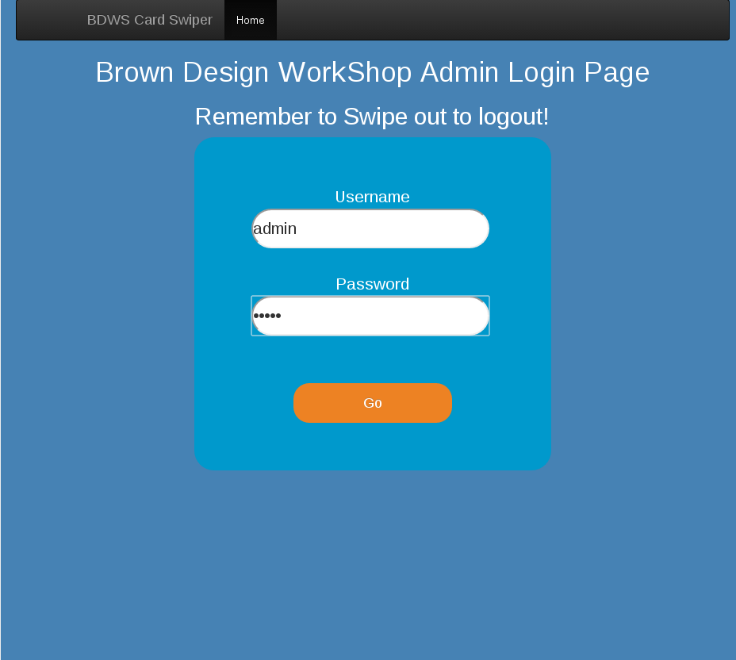
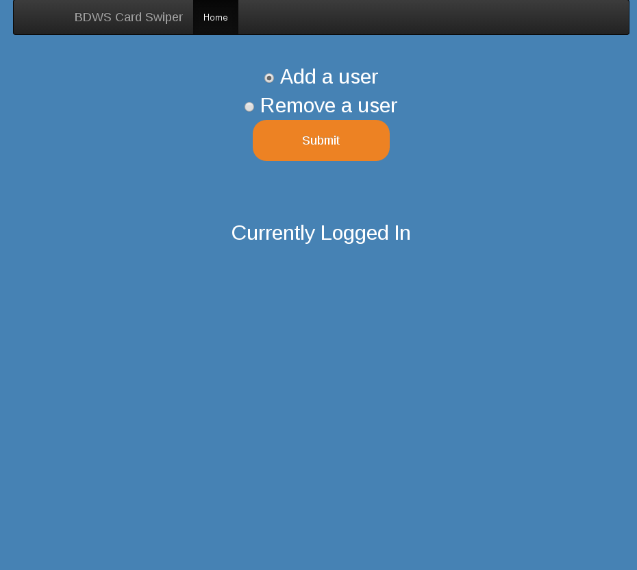
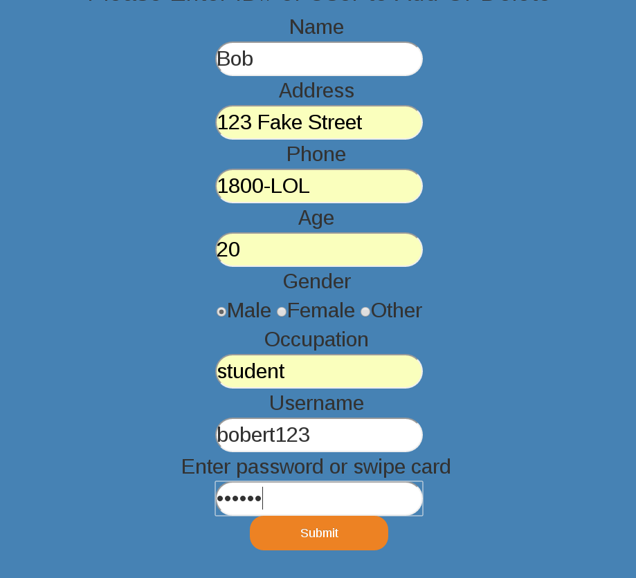
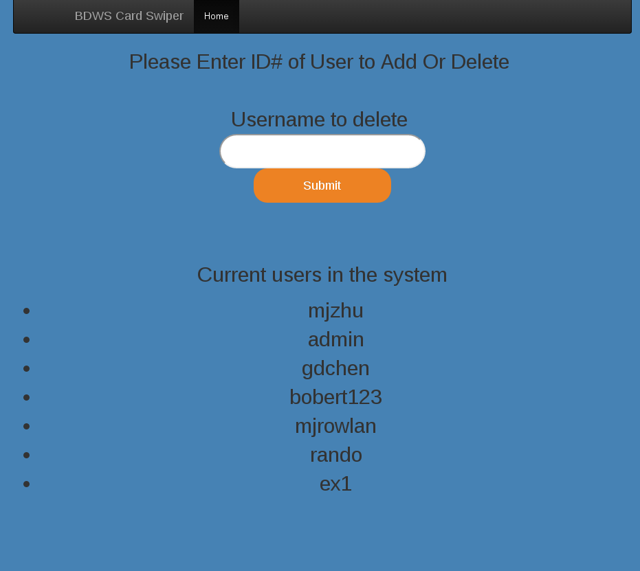
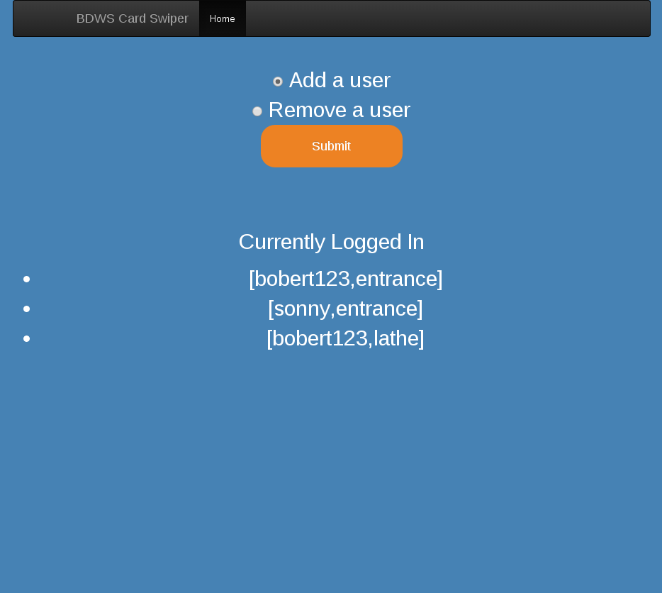
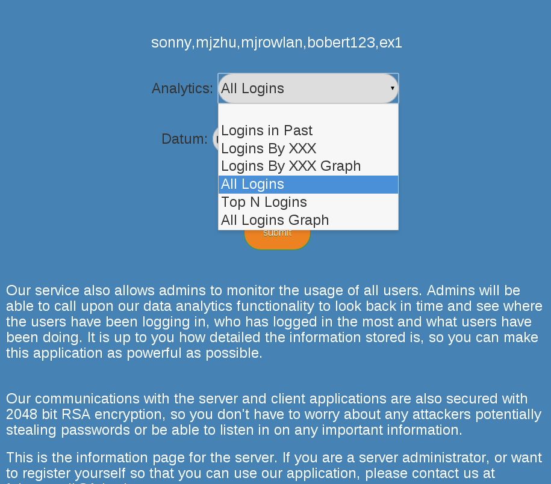
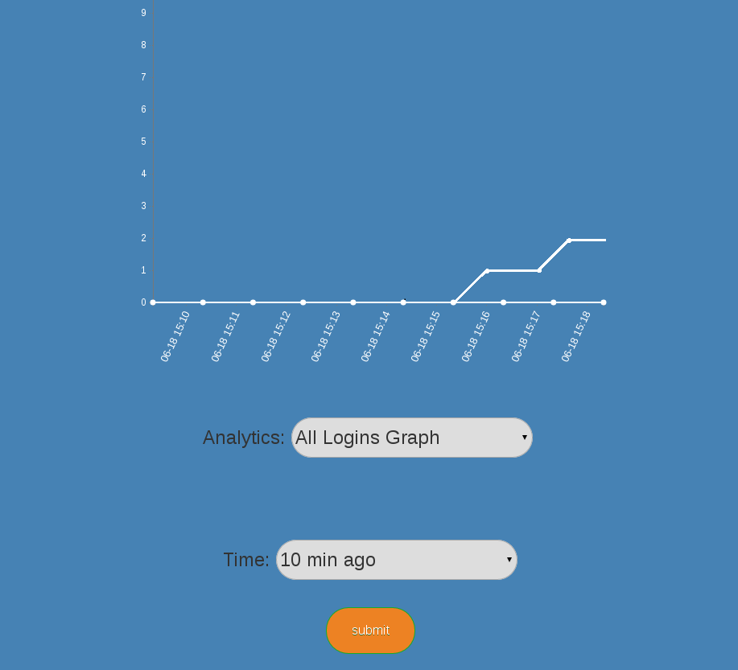

This project is not just a regular card swiping API, but an entire customizable program that allows an administrator to set up an authenication system. During early development, one of the members on our four person team who was an admin for the Brown Design Workshop (an engineering workshop at Brown) mentioned that there were no general purpose card swiping and authentication programs available online. Most of the software is for very specific purposes, such as gym management or churches, and because of this lack of customizable software the BDWS had to build their own shakey card authentication system from a bunch of different parts. Thus, we decided to implement something that could replace the current BDWS system. The project is written in Java on the serverside and stores information in a SQLite database, and runs a local web client with Spark. The frontend web client can be accessed by any computer that has access to the network the server is on, and multiple clients (representing multiple swiping stations) can all connect to the same server.
My main role in this project was to setup the backend database handlers and webserver handlers, so that information is stored and sent correctly and clients are able to communicate with the server.

The image above displays the page that the admin of the BDWS logs into. Since this is a general purpose software, the admin can choose to manually enter information or connect a card swiper to the computer so that IDs can be used. Since we were implementing a security system, we made sure that all information is encrypted with 2048 bit RSA encryption before getting sent to the server, ensuring the security of the system.

Once an admin is logged in, they can choose to add or remove users and also view the users currently logged in, which for now is none.

If they want to add a user, they are presented with a series of forms to fill in. To ensure service security, the server uses prepared statements when inserting user information into the database to prevent SQL injection attacks. (The yellow input fields were Chrome autocompleted)

If they want to delete a user, they are presented with a list of all users currently in the system so they have a reference of what users to delete.

Then, once users start to log in, the admin can visit their home page and see a list of all users in the system, and from what location they logged in from. This means that for the BDWS, the entrance and each machine would have a laptop or some other machine running a client connected to the card authentication server, and send login information to the server to check if the user has permission to access the machine. The server will then record the user, time and location of the client, and display it to the admin.

We also decided to implement a way for admins to view the historical usage of the system. Because we record user information every time they access the service, it is straightforward to allow admins to access the data on a web client instead of having to access the database. There are a few options to choose from, and it is easy to create the SQL statements executed for each data query.

Most of the options return numbers or a list of usernames, but if the graph options are chosen, login data will be represented in a graph created with D3. Here, you can see the total amount of traffic in the past 10 minutes.